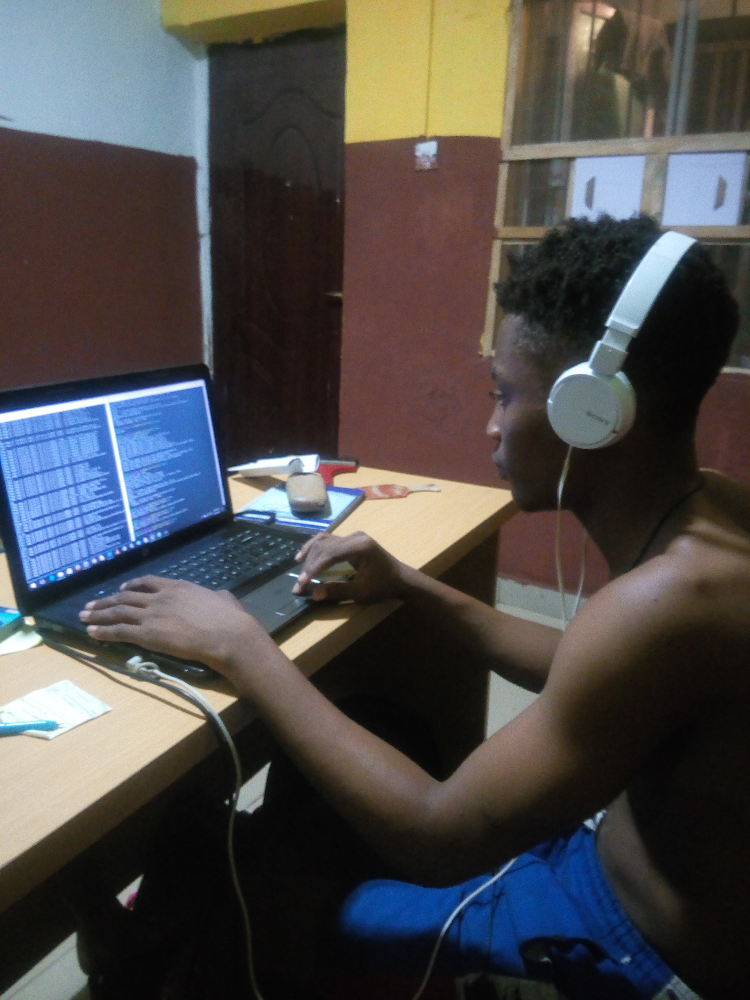

Pasta

Short Description
Making pasta at home is much easier than most people would imagine. By making your own pasta dough, you have an unlimited number of options available to you to create your own personal pasta dishes. Imagine delicate layers of egg pasta nestled between a spicy tomato sauce and meltingly tender cheese for unforgettable lasagna. Or maybe you do prefer soft pillows of ravioli stuffed with a tasty ricotta and spinach filling. You too can prepare dishes like this, and many others once you learn the basic technique of making your own pasta.Ingredients
- flour
- Sugar
- Egg
- Water
- Salt
- Oil
- Dough
Steps
- Egg pasta is super simple ingredient wise: flour, salt, eggs and olive oil. Begin by whisking together 2 cups of flour and 1/2 teaspoon of salt in a large bowl. Make a well in the center of the flour and add three large eggs and one tablespoon of extra virgin olive oil.
- Whisk the eggs and oil with a fork while slowly incorporating some of the flour from around the edges as you go. Once the dough becomes too thick to whisk with a fork, turn the dough out onto a clean work surface, along with any leftover flour from the bowl. Knead the dough and remaining flour until you’ve got a smooth, stiff ball of dough.
- Wrap the dough loosely with plastic and let it rest at room temperature for 30 minutes. The wrapped dough can also be stored in the refrigerator for up to a day if necessary.
- When you're ready to make your pasta, divide the dough into four smaller portions. Work with one portion at a time, leaving the remaining three covered with plastic to prevent them from drying out.
- Dust the dough liberally with flour, then flatten it into a rectangular shape with your hands. Once flattened, begin to roll the dough into a long, thin sheet, dusting liberally with flour on both sides as you go.
- Roll the pasta as thin as possible, keeping in mind that it will plump considerably when cooked.
- Dust the pasta liberally with flour once again, then fold it into a wide, flat roll. Folding the pasta into a flat roll instead of simply rolling the pasta up into a tube will help prevent the pasta from being squashed as it's cut. Use a sharp knife to cut the pasta into strips.
- Shake the cut pasta strands out into a loose pile and dust with flour. At this point, the pasta can be dropped into boiling water to cook or can be piled onto a baking sheet in single portions and frozen. If freezing, transfer the individual frozen pasta nests to an air-tight freezer bag for storage. To dry the frozen pasta, hang the strands through a hanger over a clothes drying rack, or over the back of a chair in a cool, dry place. Once the pasta is dry and brittle, it can be stored in an air-tight container.
- Keep in mind that fresh or fresh-frozen pasta cooks much faster than dried pasta. A quick three- to four-minute boil in lightly salted water is all you need for a plateful of springy, flavorful homemade pasta. The sky's the limit with shapes and flavors, so take this base recipe and make it your own.
What People Said

Joe
Do you have a recipe for an eggless homemade pasta? I have a vegan daughter and would like to make some homemade pasta. I have tried a plain flour and water recipe, but did not like the texture and it cooked up too soft. Thanks Vicki DiFederico
Joe
Do you have a recipe for an eggless homemade pasta? I have a vegan daughter and would like to make some homemade pasta. I have tried a plain flour and water recipe, but did not like the texture and it cooked up too soft. Thanks Vicki DiFederico